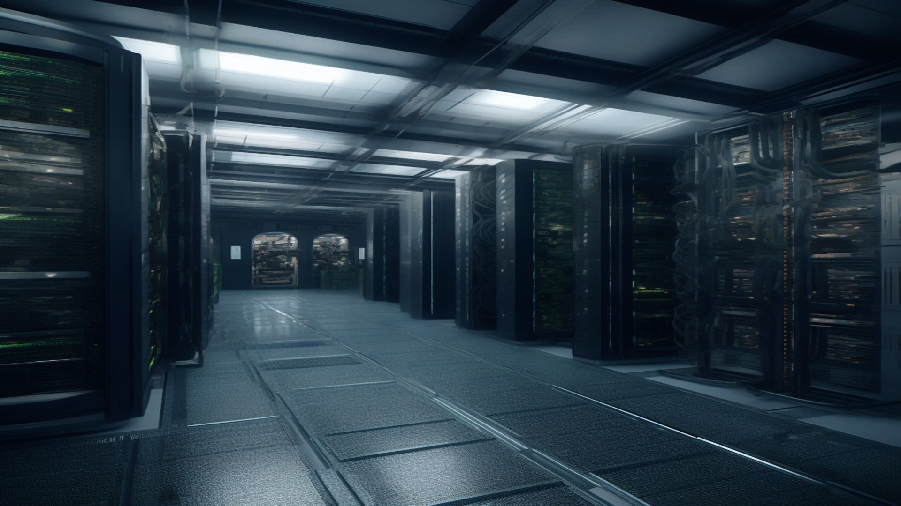

Разрешить удаленный доступ к контроллеру домена по RDP
Решается следующим образом: Переходим в управление пользователями. Переходим в Builtin — Пользователи удаленного рабочего стола, добавляем пользователя, которому необходимо предоставить доступ.

Это современный кабинет, оборудованный серверами и компьютерами,
где происходит обработка и хранение больших объемов данных.
Решается следующим образом: Переходим в управление пользователями. Переходим в Builtin — Пользователи удаленного рабочего стола, добавляем пользователя, которому необходимо предоставить доступ.
В этой статье мы расскажем и покажем как выполнить соединение с сетью колледжа для выполнения работ на ВМ в vSphere. Приступим. Для начала нам нужно зайти на сайт продуктов Kerio http://download.kerio.com . Далее требуется выбрать продукт Kerio Control и нажать на кнопку Show files. Среди списка продуктов найти Kerio Control VPN Client-Windows-WHQL (64-bit) или (32-bit) в зависимости от вашей системы. Скачиваем и выполняем установку. Не забываем согласиться на добавление сетевого адаптера, через него и пойдёт ваше соединение. После установки появляется…
Автор: Иван Трубин. Создал виртуальную машину.Возникла следующая проблема Из того, что я понял, сообщение Operating System not found говорит о том, что операционная система не айдена. Это означает, что компьютеру неоткуда загрузиться. Для решения проблемы подключаем CD-ROM. Если виртуальный диск ранее не подключали, то необходимо его настроить. В нашем случае образ располагается на сети, по этому выбираем вариант выбранный на скриншоте. Нажав на кнопку обзор выбираем следующий образ. Нажимаем Enter. Перезапускаем виртуальную машину. Началась установка.
tcpdump -i eth0 # слушаем интерфейс eth0 tcpdump port 80 # слушаем 80 порт tcpdump host google.com # слушаем трафик с хоста google.com tcpdump -n -i eth0 icmp # Ловим пакеты icmp (ping pong) tcpdump | grep -v ssh # поиск пакетов исключая пакеты ssh tcpdump -n -i eth0 net 192.168.1.15 # трафик с/на IP tcpdump -n -i eth0 net 192.168.1.0/24 # трафик с/в сеть tcpdump -l > dump && tail -f dump # Вывод с записью в файл tcpdump -i eth0 -w traffic.eth0 # Информация о трафике записывается…
В данной инструкции будет продемонстрирована настройка программы удалённого управления и просмотра Veyon. Veyon, программа максимально удобная для работы в образовательных организациях. Максимальный функционал, удобный интерфейс. Настройка Veyon Master. Настройка Veyon Master осуществляется на компьютере администратора. Производим следующие настройки. Обязательно создаём пару ключей. Для отслеживания достаточно указать следующие параметры. На этом настройка Master закончена и можно приступать к настройке клиентов. Настройка клиентов. Настройка клиентов требует меньше настроек, например на клиенте не требуется Master. После установки обязательно запускаем конфигуратор. Переходим к настройке…
mdadm — утилита для работы с программными RAID-массивами различных уровней. В данной инструкции рассмотрим примеры ее использования. Информация о RAIDcat /proc/mdstat — состояние всех RAIDmdadm -D /dev/md0 — подробная инфа о конкретном RAIDlsblk — список дисков с разделами, местом, типомdf -hT — свободное место, тип файловой системы, точки монтирования Сборка RAIDmdadm —zero-superblock —force /dev/sd{b,c} — обнуление суперблоков на дисках sdb sdc (для удаления инфы о других RAID)при получении ответа mdadm: Unrecognised md component device — /dev/sdb значит, что диск не использовался для RAID, продолжаемmdadm —create —verbose /dev/md0…
На предприятии создана сетевая инфраструктура согласно схеме представленной на рисунке 1. X — номер варианта. Вам необходимо произвести настройку сетевых устройств для организации работы сети предприятия в соответствии со следующими требованиями: 1. На сервере предприятия организуйте работу внутреннего сайта компании, сайт должен быть доступен по имени www.ytk.yurgaX.ru. 2. Разместите на главной странице сайта название вашего учебного заведения, название дисциплины, номер группы и ваши фамилию, имя и отчество. Больше никакой информации на главной странице быть не должно. 3. Сайт должен открываться…
На предприятии создана сетевая инфраструктура согласно схеме представленной на рисунке 1. X — номер варианта. Вам необходимо произвести настройку сетевых устройств для организации работы сети предприятия в соответствии со следующими требованиями: 1. На сервере предприятия организуйте работу внутреннего сайта компании, сайт должен быть доступен по имени www.ytkX.ru. Сайт должен работать по защищенному протоколу. 2. Разместите на главной странице сайта название вашего учебного заведения, название дисциплины, номер группы и ваши фамилию, имя и отчество. Больше никакой информации на главной странице быть…
Переходим в и удаляем все ветви, относящиеся к целевому профилю. Перезагружаемся. Будет создан новый профиль. Все файлы пользователя останутся в старых папках
Типы DNS-записей зависят от их функционального назначения. A-запись (Address record) Address record указывает на конкретный IP-адрес домена. Без нее сайт работать не будет. По этой записи система определяет к какому серверу обращаться за получением информации, когда пользователь вводит название сайта в адресную строку веб-браузера. Пример Hostname Тип записи Значение записи eternalhost.net. A 194.61.0.6 A-запись AAAA-запись (Address record to IPv6) AAAA запись DNS — аналог предыдущей А-записи. В значении указывается внешний IP-адрес в формате IPv6. Пример Hostname Тип записи Значение записи…